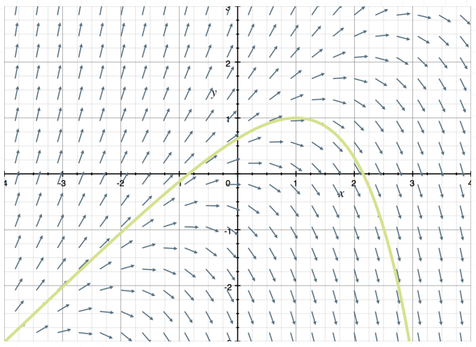
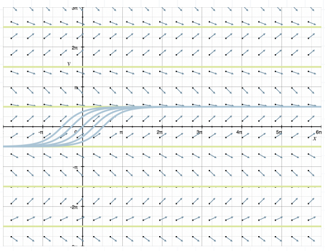
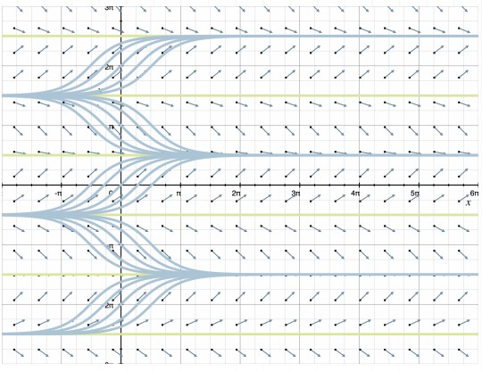
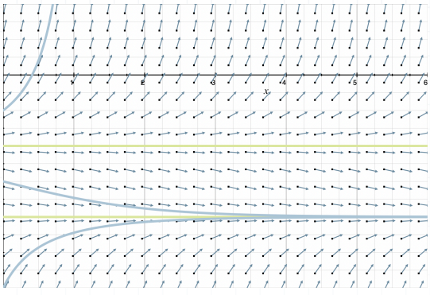

Differential Equations Pt. 2
Modeling with Differential Equations
Direction Fields and Solution Curves
In the real world, differential equations won't necessarily match one of the formats previously discussed (linear, separable, Bernoulli, homogenous, exact, etc.) or necessarily have a solution. When there isn't a calculable solution, we can still often draw conclusions about the behavior of the differential equation, by taking a geometric approach.
A direction field is a graph made of many small arrows, each of which approximates the slope of the curve in the area where the arrow is plotted. A direction field is just a geometric way of displaying the same information as a differential equation, and sketching a solution curve, also called an integral curve. A directional field is a sketch of a differential equation, and an integral curve plotted through the direction field is the sketch of a solution to that differential equation.
Sketching Direction Fields
Choose a set of equally spaced coordinate points, and then calculate the derivative of each point. Once we find the value of the derivative of each coordinate point, we sketch an arrow whose slope is equal to the value of the derivative. Each of the arrows in the direction field represent the tangent to the solution curve at that point.

Now that we understand the idea of a solution curve through a direction field representing the solution to the differential equation, we must talk about the interval on which the solution is valid, called the interval of validity, interval of existence, interval of definition, or domain of the solution.
An interval of validity can be an open interval like $(a,b)$, a closed interval like $[a,b]$, or an infinite interval like $(-\infty, \infty)$ or $(a, \infty)$.
We looked earlier at the linear differential equation:
$\frac{dy}{dx} + 2y = 4e^{-2x}$
and used the integrating factor method to find its general solution:
$y = \frac{4x+C}{e^{2x}}$
Given the initial condition $y(0) = 1$, we could determine that the associated particular solution is:
$y = \frac{4x+1}{e^{2x}}$
and the interval of validity would be all real numbers, $(-\infty, \infty)$.
Linear and Nonlinear Equations
Our process for finding the interval of validity will depend on whether we're starting with a linear differential equation or a nonlinear differential equation. When the equation is linear, we can find the interval of validity without calculating the equation's solution, because the interval of validity is determined by $P(x)$ and $Q(x)$ from the standard form of the linear equation.
$\frac{dy}{dx} + P(x)y = Q(x)$
If $P(x)$ and/or $Q(x)$ are discontinuous at any point $x$, then those values of $x$ will break up into different intervals of validity.
Example:
Find the interval of validity for the solution to the following differential equation, given $f(0) = \frac{5}{2}$.
$\frac{dy}{dx} = -5y + 3e^x$
Put the equation in standard form of a linear equation.
$\frac{dy}{dx} + 5y = 3e^x$
We can identify $P(x) = 5$ and $Q(x) = 3e^x$. Both of these are defined everywhere, so the interval of validity is $(-\infty, \infty)$.
If we wanted to also find the particular solution by solving the initial value problem, we'd find the integrating factor:
$p(x) = e^{ \int P(x) ~dx }$
$p(x) = e^{ \int 5 ~dx }$
$p(x) = e^{5x}$
then multiply through the linear equation:
$\frac{dy}{dx}(e^{5x}) + 5y(e^{5x}) = 3e^x(e^{5x})$
$\frac{dy}{dx} e^{5x} + 5e^{5x}y = 3e^{6x}$
$\frac{d}{dx} (ye^{5x}) = 3e^{6x}$
integrate both sides:
$\int \frac{d}{dx} (ye^{5x}) ~dx = \int 3e^{6x} ~dx$
$ye^{5x} = \frac{1}{2} e^{6x} + C$
and then solve for $y$ to find the general solution.
$y = \frac{ e^{6x} + 2C }{ 2e^{5x} }$
Substituting the initial condition $f(0) = \frac{5}{2}$ lets us solve for $C$.
$\frac{5}{2} = \frac{ e^{6(0)} + 2C }{ 2e^{5(0)} }$
$\frac{5}{2} = \frac{1 + 2C}{2(1)}$
$5 = 1 + 2C$
$4 = 2C$
$C = 2$
We can plug $C$ back into the general solution to find the particular solution.
$y = \frac{ e^{6x} + 2(2) }{ 2e^{5x} }$
$y = \frac{ e^{6x} + 4 }{ 2e^{5x} }$
This illustrates how we can determine the interval of validity for a linear equation without first finding the solution. With a nonlinear equation, we have to find the solution first, then determine where (if anywhere) the solution is undefined.
Example:
Given the general solution to $y' = y^2 ~sin ~x$ and the initial condition $y(0) = 2$, find the particular solution and the interval of validity.
$y = \frac{1}{cos ~x + C}$
To find the particular solution, we'll substitute $x=0$ and $y=2$.
$2 = \frac{1}{cos ~0 + C}$
$2 = \frac{1}{1+C}$
$2 + 2C = 1$
$2C = -1$
$C = - \frac{1}{2}$
Then plug this back into the general solution.
$y = \frac{1}{ cos ~x - \frac{1}{2} }$
$y = \frac{1}{ \frac{1 + 2 ~cos ~x}{2} }$
$y = \frac{2}{ -1 + 2 ~cos ~x }$
The solution is undefined when the denominator is $0$.
$-1 + 2 ~cos ~x = 0$
$2 ~cos ~x = 1$
$cos ~x = \frac{1}{2}$
$x = \left\{ \frac{\pi}{3} + 2 \pi k, k \in \mathbb{Z} \right\} \cup \left\{ \frac{5 \pi}{3} + 2 \pi k, k \in \mathbb{Z} \right\}$
These values separate $(-\infty, \infty)$ into many intervals of validity.
$ \ldots \left( - \frac{7 \pi}{3}, - \frac{5 \pi}{3} \right) \left( - \frac{-5 \pi}{3}, - \frac{\pi}{3} \right) \left( - \frac{\pi}{3}, \frac{\pi}{3} \right) \left( \frac{\pi}{3}, \frac{5 \pi}{3} \right) \left( \frac{5 \pi}{3}, \frac{7 \pi}{3} \right) \ldots $
Numerical Methods
We looked at analytical methods to solve some special types of first and second order equations, then the geometric method of sketching the direction field. Now we will look at a numerical method to approximate a solution.
As long as we have a differential equation and one initial condition, we can use Euler's method to approximate a solution. We choose a step size $\Delta t$, which is the distance bewteen two successive values of $t$ at which $y$ is calculated. Then we use the initial condition to identify $(t_0, y_0)$, and plug $(t_0, y_0)$ and $\Delta t$ into Euler's formula, in order to calculate $y$.
$y_1 = y_0 + [f(t_0, y_0)] \Delta t$
Then we use $(t_1, y_1)$ and $\Delta t$ to calculate $y_2$, and use $(t_2, y_2)$ to calculate $y_3$, etc.
Example:
Use Euler's method and 2 steps to find $y(1)$, given $y(0) = 2$.
$y' = y - t$
We're starting with the initial condition $y(0) = 2$ and attempting to approximate $y(1)$, which means we're starting at $t_0 = 0$ and ending at $t=1$. To find step size, we divide the difference between these by the number of steps we were asked to use.
$\frac{1-0}{2} = \frac{1}{2} = 0.5 = \Delta t$
| $t$ | $y$ formula | $y$ |
|---|---|---|
| $t_0 = 0$ | $y_0 = 2$ | $y_0 = 2$ |
| $t_1 = 0.5$ | $y_1 = 2 + (2-0)(0.5)$ | $y_1 = 3$ |
| $t_2 = 1$ | $y_2 = 3 + (3-0.5)(0.5)$ | $y_2 = 4.25$ |
Autonomous Equations and Equilibrium Solutions
We've looked at linear and nonlinear equations, but now want to introduce autonomous equations as a third type of ODE. Autonomous equations are differential equations of the form $\frac{dy}{dt} = f(y)$. The defining characteristic is that the independent variable ($t$ above) never appears explicitly in the equation, but instead only as part of the derivative. They are separable equations that can be rewritten as:
$\frac{1}{f(y)} ~dy = dt$
Direction Fields
If we choose some value of $y$, let's call it $y_0$, we can plug it into the right side of $\frac{dy}{dt} = f(y)$ to find $f(y_0)$, which will be some constant $k$.
$f(y_0) = k$
If $f(y_0) = k$, then $\frac{dy}{dt} = k$. Therefore, for any particular $y_0$, the slope $\frac{dy}{dt}$ will be constant. For example, in the direction field of $\frac{dy}{dt} = cos ~y$, every horizontal row in the direction field contains a set of entirely parallel direction arrows, as will always be the case for autonomous equations.
If we plug some specific $y_0$ into $f$ from the right side of the autonomous differential equation, we come out with some constant value $k$, such that $f(y_0) = k$. If $k=0$, the function $f(y)$ has a zero at $y_0$. We say these zeros are the critical points, equilibrium points, or stationary points of the autonomous equation; i.e., a real number $y_0$ is a critical point if $f(y_0) = 0$.
Referring to the equation $\frac{dy}{dt} = cos ~y$, we know $cos ~y = 0$ when $y = (\pi / 2) + \pi k$, where $k$ is any integer. In the direction field, the critical solutions, or equilibrium solutions, are horizontal lines representing the solution curves that correspond to each critical point.
These equilibrium solutions are lines that will never be crossed by the curves of other solutions, which means that when we get close to an equilibrium solution, the slopes of the direction arrows level out.

Futhermore, because the direction arrows along any horizontal line are parallel, all the solution curves within any region between two equilibrium solutions will be translations of each other.

Equilibrium solutions that attract solution curves are called stable equilibrium solutions, and equilibrium solutions that repel solution curves are unstable equilibrium solutions, or repellers. Equilibrium solutions that attract solution curves on one side and repel them on the other are semi-stable equilibrium solutions (and are more rare).
Example:
Find any equilibrium solutions of the following autonomous differential equation.
$\frac{dy}{dt} = y^2 + 3y + 2$
The autonomous differential equation has equilibrium solutions at:
$y^2 + 3y + 2 = 0$
$(y+2)(y+1) = 0$
$y = -1, -2$
These two equilibrium solutions divide the vertical axis into three intervals:
$y \lt -2$
$-2 \lt y \lt -1$
$-1 \lt y$
These solution curves approach $y=-2$ on both sides, but move away from $y=-1$ on both sides. Therefore, $y=-2$ is a stable equilibrium solution, while $y=-1$ is an unstable equilibrium solution.

We can classify equilibrium solutions without sketching a direction field, by using the function $f(y)$ to determine the direction of the solution curves.
Continuing with the last example, once we've found the equilibrium solutions $y=-1$, $-2$, we'll pick a test value in each of the 3 intervals they create:
$y \lt -2$
$-2 \lt y \lt -1$
$-1 \lt y$
We'll use test values $y=-3$, $y = -\frac{5}{4}$, and $y=0$, and substitute them into $f(y) = y^2 + 3y + 2$.
$f(-3) = (-3)^2 + 3(-3) + 2$
$f(-3) = 9 - 9 + 2$
$f(-3) = 2 \gt 0$
$f \left( - \frac{5}{4} \right) = \left( \frac{5}{4} \right)^2 + 3 \left( - \frac{5}{4} \right) + 2$
$f \left( - \frac{5}{4} \right) = \frac{25}{16} - \frac{15}{4} + 2$
$f \left( - \frac{5}{4} \right) = - \frac{3}{16} \lt 0$
$f(0) = 0^2 + 3(0) + 2$
$f(0) = 2 \gt 0$
We find a positive value when $y=-3$, a negative value when $y = - \frac{5}{4}$, and a positive value when $y=0$. A positive outcome tells us that the solution curves are increasing, or rising in the interval, while a negative outcome tells us that the solutions curves in that interval are decreasing, or falling.
| Interval | Sign of $f(y)$ | Direction of $f(y)$ |
|---|---|---|
| $(-1, \infty)$ | $+$ | Increasing/Rising |
| $(-2, -1)$ | $-$ | Decreasing/Falling |
| $(-\infty, -2)$ | $+$ | Increasing/Rising |
The Logistic Equation
Autonomous equations are often used to model population growth over time.
Exponential Population Growth
A population that grows exponentially over time can be modeled by:
$P(t) = P_0 e^{kt}$
- $P(t)$ is population after time $t$
- $P_0$ is the population when time is at $0$
- $k$ is the growth constant
The exponential equation is most useful for modeling a small population where growth is unconstrained.
Example:
A bacteria population increases tenfold in $8$ hours. Assuming exponential growth, how long does it take for the population to double?
$10 p_0 = P_0 e^{k(8)}$
$\frac{10 P_0}{P_0} = e^{k(8)}$
$10 = e^{8k}$
Then solve for $k$:
$ln ~10 = ln ~e^{8k}$
$ln ~10 = 8k$
$k = \frac{ln ~10}{8}$
With a value for the constant $k$, we can determine how long it takes for the population to double.
$2 P_0 = P_0 e^{ \frac{ln ~10}{8} t }$
$\frac{2 P_0}{P_0} = e^{ \frac{ln ~10}{8} t }$
$2 = e^{ \frac{ln ~10}{8} t }$
Apply the natural log to both sides of the equation, cancelling the $ln ~e$, and then rearrange.
$ln ~2 = ln ~e^{ \frac{ln ~10}{8} t }$
$ln ~2 = \frac{ln ~10}{8} t$
$t = \frac{8 ~ln ~2}{ln ~10}$
$t \approx 2.41$
The bacteria doubled the size of its original population in about $2.41$ hours.
The Logistic Growth Equation
Populations don't tend to grow exponentially without bound. Eventually, the population becomes large enough that the environment starts to constrain its growth. This slow-fast-slow growth pattern is modeled by the logistic growth equation.
$\frac{dP}{dt} = kP \left( 1 - \frac{P}{M} \right)$
- $\frac{dP}{dt}$ is the rate of growth of the population $P$ over time $t$
- $k$ is the growth constant
- $M$ is the carrying capacity or saturation level, which is the largest population that can be sustained by the surrounding environment
The logistic growth equation is an autonomous first order differential equation, because there is no independent variable $t$ on the right side of the logistic equation, but rather, $t$ only appears as part of the derivative $\frac{dP}{dt}$.
The autonomous equation $\frac{dP}{dt} = f(P)$ will have equilibrium solutions when the population is at $0$, and when the population is at its carrying capacity. Between $P=0$ and $P=M$, the population is always increasing.
Predator-Prey Systems
Populations don't tend to exist in isolation, but rather, usually interact with other populations as predator or prey. It's common to model the interaction with a system of differential equations. In an environment with two populations, we can classify the system as cooperative, competitive, or predator-prey.
In cooperative systems, both populations are increasing.
$\frac{dx}{dt} = ax + bxy$
$\frac{dy}{dt} = cy + dxy$
In competitive systems, both populations are decreasing in size.
$\frac{dx}{dt} = ax - bxy$
$\frac{dy}{dt} = cy - dxy$
In predator-prey systems, the size of one population is increasing, while the size of the other population is decreasing.
$\frac{dx}{dt} = ax + bxy$
$\frac{dy}{dt} = cy - dxy$
or
$\frac{dx}{dt} = ax - bxy$
$\frac{dy}{dt} = cy + dxy$
Sometimes one or both equations will contain higher-degree terms, meaning the population is not only affected by the other population in the system, but also by another factor like carrying capacity.
Stable Solutions of the System
The system of different equations modeling two interacting populations will have predictable equilibrium solution.
- The system will have a stable equilibrium solution $(0,0)$, where both populations $x$ and $y$ are at $0$ and will remain at $0$ indefinitely
- If the system has an equilibrium solution at $(a, 0)$, it means population $x$ is stable at size $a$, while population $y$ is at $0$
- If the system has an equilibrium solution at $(0, b)$, then population $y$ is stable at size $b$, while population $x$ is at $0$
- The most interesting solution is an equilibrium solution at $(a, b)$, where population $x$ has size $a$, which is in supporting balance of population $y$ at size $b$, and vice versa.
Example:
Does the following system of lions and zebras represent a cooperative, competitive, or predator-prey system? What are the equilibrium solutions of the system and what do they tell us about the balance of the populations?
$\frac{dL}{dt} = -0.5L + 0.0001LZ$
$\frac{dZ}{dt} = 2Z - 0.0002Z^2 - 0.01LZ$
Because the mixed $LZ$ term $0.0001LZ$ in the differential equation for lions $\frac{dL}{dt}$ is positive, while the mixed $LZ$ term $-0.01LZ$ in the differential equation for zebras is negative, this is a predator-prey relationship in which the lions are predators.
To find equilibrium solutions, we'll factor both equations to get:
$\frac{dL}{dt} = -0.5L + 0.0001LZ$
$\frac{dL}{dt} = 0.0001L(-5000 + Z)$
$\frac{dL}{dt} = 0.0001L(Z - 5000)$
and
$\frac{dZ}{dt} = 2Z - 0.0002Z^2 - 0.01LZ$
$\frac{dZ}{dt} = 0.0002Z (10000 - Z - 50L)$
Setting both equations equal to $0$ gives:
$0.0001L(Z - 5000) = 0$
$0.0001L = 0 \text{ and } Z - 5000 = 0$
$L = 0$ and $Z = 5000$
and
$0.0002Z(10000 - Z - 50L) = 0$
$0.0002Z = 0 \text{ and } 10000 - Z - 50L = 0$
$Z = 0 \text{ and } Z + 50L = 10000$
We need to test both solutions from the first equation with both solutions from the second equation. We get 4 combinations:
- $L = 0 \text{ and } Z = 0$
- $L = 0 \text{ and } Z + 50L = 10000$
- $Z = 5000 \text{ and } Z = 0$
- $Z = 5000 \text{ and } Z + 50L = 10000$
We're looking for each pair to generate an equilibrium solution $(L, Z)$. The third pair, $Z = 5000$ and $Z = 0$, doesn't include a value for $L$, so we can eliminate it. The first pair is trivial, and describes the solution where both populations are at $0$.
To solve the second pair, we'll substitute $L=0$ into $Z + 50L = 10000$.
$Z + 50(0) = 10000$
$Z = 10000$
To solve the third equation pair, we'll substitute $Z = 5000$ into $Z + 50 L = 10000$.
$5000 + 50L = 10000$
$50L = 5000$
$L = 100$
The solutions of the system are therefore:
$(L,Z) = (0, 0)$
$(L,Z) = (0, 10000)$
$(L,Z) = (100, 5000)$
Exponential Growth and Decay
We sometimes use the exponential equation,
$P(t) = P_0 e^{kt}$
to model a population that grows exponentially.
This equation is actually the solution to the initial value problem.
$\frac{dP}{dt} = kP$
$P(t_0) = P_0$
But we can also write this differential equation more generally as:
$\frac{dx}{dt} = kx$
$x(t_0) = x_0$
$k$ is the constant of proportionality, and is a growth constant if $k \gt 0$, decay constant if $k \lt 0$.
The equation is a separable equation.
$\frac{dx}{dt} = kx$
$\frac{1}{x} ~dx = k ~dt$
$\int \frac{1}{x} ~dx = \int k ~dt$
$ln|x| = kt + C$
$e^{ln |x|} = e^{kt + C}$
$|x| = e^{kt} e^c$
$|x| = Ce^{kt}$
Substituting the initial condition is what allows us to solve for the value of $C$,
Example:
The size of a bacteria population is initially $P_0$ and the population has grown to $3P_0$ after $2$ hours. If the growth rate is proportional to the size of the population at any time $t$, how long did it take for the population to double?
This gives us the initial conditions $P(0) = P_0$ and $P(2) = 3P_0$. Substituting the first condition into the general solution equation lets us solve for constant $C$.
$P = Ce^{kt}$
$P_0 = Ce^{k(0)}$
$P_0 = C$
We'll substitute $C = P_0$ and $P(2) = 3P_0$ into the general solution equation to find $k$, the constant of proportionality.
$P = P_0 e^{kt}$
$3 P_0 = P_0 e^{k(2)}$
$3 = e^{2k}$
Apply the natural logarithm to both sides.
$ln ~3 = ln (e^{2k})$
$ln ~3 = 2k$
$k = \frac{ln ~3}{2}$
Now we can use $k$ to find the time it took for the population to double, or the time it took to reach a population of $2P_0$.
$2 P_0 = P_0 e^{ \frac{ln ~3}{2} t }$
$2 = e^{ \frac{ln ~3}{2} t }$
$ln ~2 = ln ~e^{ \frac{ln ~3}{2} t }$
$ln ~2 = \frac{ln ~3}{2} t$
$t = \frac{2 ~ln ~2}{ln ~3}$
$t \approx 1.26$
The bacteria doubled the size of its original population in about $1.26$ hours.
Example:
A certain isotope decays to $25\%$ of its original size after $50$ years. If the rate of decay is proportional to the amount remaining at any time $t$, how much of the isotope will remain after $75$ years?
This gives us the initial conditions $x(0) = x_0$ and $x(50) = (\frac{1}{4})x_0$. We'll substitute the first into the general solution equation to find $C$.
$x = Ce^{kt}$
$x_0 = Ce^{k(0)}$
$x_0 = C$
Now substituting $C = x_0$ and $x(50) = \left( \frac{1}{4} \right)x_0$ will let us find $k$.
$\frac{1}{4} x_0 = x_0 e^{k(50)}$
$\frac{1}{4} = e^{50k}$
$ln ~\frac{1}{4} = ln(e^{50k})$
$ln ~1 - ln ~4 = 50k$
$- ln ~4 = 50k$
$k = - \frac{ln ~4}{50}$
Finally, we'll substitute this decay constant and $t=75$ to find the amount of the isotope that remains after $75$ years.
$x(t) = x_0 e^{ - \frac{ln ~4}{50}(75) }$
$x(t) = x_0 e^{ ln(4^{-\frac{3}{2}}) }$
$x(t) = \frac{1}{4^{3/2}} x_0$
$x(t) = \frac{1}{8} x_0$
$\frac{1}{8}$ of the original amount remains after $75$ years of decay.
Newton's Law of Cooling
Newton's law of cooling models the way in which a warm object in a cooler environment cools down until it matches the temperature of its environment. This is similar to other models of decay. The formula is:
$\frac{dT}{dt} = -k(T-T_a), \text{ with } T(0) = T_0$
- $T$ is the temperature over time
- $k$ is the decay constant
- $T_a$ is the temperature of the environment
- $T_0$ is the initial temperature of the hot object
The temperature function, and the solution to the Newton's law equation, will be:
$T(t) = T_a + (T_0 - T_a) e^{-kt}$
Example:
A pot of soup boiling at $100^{\circ} C$ has been removed from a stove and set on the countertop where the ambient temperature is $23^{\circ} C$. After $5$ minutes, the soup cools to $98^{\circ} C$. If it needs to be served at $90^{\circ}$, how long must it sit before being served?
$T_0 = 100^{\circ}$
$T_a = 23^{\circ}$
$T(5) = 98^{\circ}$
If we plug everything we know into the Newton's law of cooling equation, we get:
$T(t) = T_a + (T_0 - T_a) e^{-kt}$
$T(t) = 23 + (100 - 23) e^{-kt}$
$T(t) = 23 + 77 e^{-kt}$
Substitute the initial condition $T(5) = 98^{\circ}$,
$T(5) = 23 + 77e^{-k(5)}$
$98 = 23 + 77e^{-5k}$
in order to find a value for the decay constant $k$.
$75 = 77e^{-5k}$
$\frac{75}{77} = e^{-5k}$
$ln \frac{75}{77} = -5k$
$k = - \frac{1}{5} ~ln \frac{75}{77}$
Substitute this value for $k$ into the equation modeling temperature over time.
$T(t) = 23 + 77e^{ - \left(- \frac{1}{5} ~ln \frac{75}{77} \right) t }$
$T(t) = 23 + 77e^{ \left( \frac{1}{5} ~ln \frac{75}{77} \right) t }$
We want to find the time $t$ at which the soup reaches $90^{\circ}$, so we'll substitute $T(t) = 90^{\circ}$.
$90 = 23 + 77e^{ \left( \frac{1}{2} ~ln \frac{75}{77} \right) t }$
$67 = 77e^{ \left( \frac{1}{2} ~ln \frac{75}{77} \right) t }$
$\frac{67}{77} = e$
Apply the natural logarithm to both sides.
$ln \frac{67}{77} = ln \left( e^{ \left( \frac{1}{5} ~ln \frac{75}{77} \right) t } \right)$
$ln \frac{67}{77} = \left( \frac{1}{5} ~ln \frac{75}{77} \right) t$
$5 ~ln \frac{67}{77} = \left( ln \frac{75}{77} \right) t$
$t = \frac{ 5 ~ln\frac{67}{77} }{ ln \frac{75}{77} }$
$t \approx 26.43$
The pot of soup will cool from $100^{\circ} C$ to $90^{\circ} C$ in about $26.5$ minutes.
Electrical Series Circuits
Depending on the components included in the circuit, we'll sometimes model these with first order differential equations, and sometimes with second order differential equations.
We'll usually see some collection of these 4 components in a series circuit:
- The inductance $L$, measured as a constant in henries $h$
- The resistance $R$, measured as a constant in ohms $\Omega$
- The capacitance $C$, measured as a constant in farads $f$
- The impresssed voltage $E(t)$
Kirchoff's Second Law
Kirchoff's second law tells us that the impressed voltage $E(t)$ on a closed loop must be equal to the sum of the voltage drops in a loop. If we apply voltage to the circuit, we're impressing a certain voltage of $E(t)$ onto the system, creating a current $i(t)$ that moves around the circuit.
The voltage drop that occurs when the current encounters the resistor is $Ri$. The voltage drop that occurs when the current encounters the capacitor at any time $t$. The current $i(t)$ is related to the capacitor's change $q(t)$ by $i = \frac{dq}{dt}$. If we use this last equation to write everything in terms of $q$:
$L \frac{di}{dt} + Ri + \frac{1}{C}q = E(t)$
$L \frac{d}{dt} \left( \frac{dq}{dt} \right) + R \frac{dq}{dt} + \frac{1}{C}q = E(t)$
$L \frac{d^2q}{dt^2} + R \frac{dq}{dt} + \frac{1}{C}q = E(t)$
The electrical vibrations in the circuit are said to be free when $E(t) = 0$, and forced when $E(t) = 0.0$.
Kirchoff's second law still holds when the circuit is missing one of the above components. For instance, for a circuit without an inductor, the impressed voltage is still equivalent to the voltage drops over the resistor and capacitor, as such:
$R \frac{dq}{dt} + \frac{1}{C}q = E(t)$
Example:
Find the current $i$ after connecting a $9$-volt battery to a series circuit with inductance $1.5h$ and resistance $5 \Omega$.
There is no capacitor, so we can simplify the equation:
$L \frac{di}{dt} + Ri = E(t)$
Substituting $L=1.5$, $R=5$, and $E(t) = q$, we get:
$\frac{3}{2} \left( \frac{di}{dt} \right) + 5i = 9$
$\frac{di}{dt} + \frac{10}{3}i = 6$
This is now a linear differential equation in standard form, so we'll find the integrating factor.
$I(t) = e^{ \int \frac{10}{3}dt }$
$I(t) = e^{ \frac{10}{3} t }$
Multiplying through the differential equation by the integrating factor, we get:
$\frac{di}{dt} e^{ \frac{10}{3} t } + \frac{10}{3} ie^{ \frac{10}{3} t } = 6 e^{ \frac{10}{3} t }$
$\frac{d}{dt} \left( ie^{ \frac{10}{3} t } \right) = 6 e^{ \frac{10}{3} t }$
Integrate both sides, then solve for the current $i$.
$\int \frac{d}{dt}(ie^{ \frac{10}{3}t }) ~dt = \int 6e^{ \frac{10}{3} t } ~dt$
$ie^{ \frac{10}{3}t } = \frac{9}{5} e^{ \frac{10}{3}t } + C$
$i = \frac{9}{5} + Ce^{ - \frac{10}{3} t }$
The second term in the equation, $Ce^{ - \frac{10}{3} t }$, approaches $0$ as $t \to \infty$. For that reason, it is called the transient term. Terms that remain after the transient terms drop away are the steady-state part of the solution (in this case $\frac{9}{5}$).
The Second Order Circuit Equation
Kirchoff's second law gives us:
$L \frac{d^2q}{dt^2} + R \frac{dq}{dt} + \frac{1}{C}q = E(t)$
$Lq'' + Rq' + \frac{1}{C}q = E(t)$
The associated homogenous equation is:
$Lr^2 + Rr + \frac{1}{C} = 0$
This is a quadratic equation, so the roots are:
$r = \frac{ -R \pm \sqrt{ R^2 - \frac{4L}{C} } }{ 2L }$
We say that a circuit is:
- Overdamped if the discriminant is positive, $R^2 - 4L/C \gt 0$, in which case we will have distinct real roots
- Critically damped if the discriminant is zero, $R^2 - 4L/C = 0$, in which case we'll find equal real roots
- Underdamped if the discriminant is negative, $R^2 - 4L/C \lt 0$, in which case we'll find complex conjugate roots
Example:
Given:
- $L = 0.5 ~henry (h)$
- $R = 4.5 ~ohms (\Omega)$
- $C = 0.1 ~farad (f)$
- $E(t) = 0$
- $q(0) = q_0 ~coulombs (C)$
- $i(0) = 0$
find the charge $q(t)$ on the capacitor in a circuit with an inductor, resistor, and capacitor.
$L \frac{d^2q}{dt^2} + R \frac{dq}{dt} + \frac{1}{C}q = E(t)$
$0.5q'' + 4.5q' + \frac{1}{0.1}q = 0$
$q'' + pq' + 20q = 0$
The associated characteristic equation for this second order homogenous equation is:
$r^2 + 9r + 20 = 0$
$(r+5)(r+4) = 0$
$r = -5, -4$
With distinct real roots, we can say that the general solution and its derivative are given by:
$q(t) = c_1e^{-5t} + c_2e^{-4t}$
$q'(t) = i(t) = -5c_1e^{-5t} - 4c_2e^{-4t}$
Substituting the initial conditions $q(0) = q_0$ and $i(0) = 0$ into these equations, we get:
$q_0 = c_1e^{-5(0)} + c_2e^{-4(0)}$
$q_0 = c_1 + c_2$
and
$0 = -5c_1e^{-5(0)} - 4c_2e^{-4(0)}$
$0 = -5c_1 - 4c_2$
$c_2 = - \frac{5}{4}c_1$
Substituting this value into the first equation gives:
$q_0 = c_1 - \frac{5}{4}c_1$
$q_0 = - \frac{1}{4}c_1$
$c_1 = -4q_0$
Plugging this back into the equation for $c_2$, we get:
$c_2 = - \frac{5}{4}(-4q_0)$
$c_2 = 5q_0$
So the general solution can be written as:
$q(t) = -4 q_0 e^{-5t} + 5 q_0 e^{-4t}$
$q(t) = 5 q_0 e^{-4t} - 4 q_0 e^{-5t}$
$q(t) = q_0 e^{-4t} (5 - 4e^{-t})$
This solution equation models the charge $q$ on the capacitor at any time $t$.
Spring and Mass Systems
The general idea of these problems is that we'll have some unstretched spring hanging vertically from something rigid, with a mass hanging on the end of the spring. The spring may stretch and compress before reaching a motionless equilibrium.
Hooke's Law tells us that the spring exerts force on the mass as it tries to return to its unstretched state, and that force is proportional to the length between its unstretched state and state of equilibrium with the mass. $F = ks$, where $k$ is the spring constant.
Free Motion, Undamped, and Damped
If the spring and mass system is operating in a vacuum, the motion of the spring and mass is free undamped motion, or simple harmonic motion. Using Newton's Second Law, we can model the position of the mass over time in relation to equilibrium as:
$\frac{d^2x}{dt^2} + \frac{k}{m}x = 0$
- $x$ is the distance between the mass and its position in equilibrium
- $k$ is the spring constant
- $m$ is the mass
- $t$ is time
It's also common to substitute $\omega^2 = k/m$ to rewrite the equation as:
$\frac{d^2x}{dt^2} + \omega^2 x = 0$
This is because, in this form, we can say that the general solution is:
$x(t) = c_1~ cos(\omega t) + c_2 ~sin (\omega t)$
$x$ is positive when the mass is below its equilibrium position (the spring stretched further than equilibrium) and negative when the mass is above its equilibrium position.
Example:
A mass of $10g$ stretches a spring $4cm$. Find the equation that models the motion of the mass if we release the mass when $t=0$ from a position of $3cm$ above equilibrium, with a downward velocity of $1cm/s$.
First, we'll use Hooke's Law to find the spring constant $k$.
$F = ks$
$10 = k(4)$
$k = 2.5 g/cm$
Plugging everything we have into the second order equation, we get:
$\frac{d^2x}{dt^2} + \frac{k}{m} = 0$
$\frac{d^2x}{dt^2} + \frac{2.5}{10}x = 0$
$\frac{d^2x}{dt^2} + \frac{1}{4}x = 0$
We see that $\omega = \sqrt{ \frac{1}{4} } = \frac{1}{2}$, which means the general solution is given by:
$x(t) = c_1 ~cos(\omega t) + c_2 ~sin(\omega t)$
$x(t) = c_1 ~cos \left( \frac{1}{2} \right) + c_2 ~sin \left( \frac{1}{2} t \right)$
Its derivative is:
$x'(t) = - \frac{1}{2} c_1 ~sin \left( \frac{1}{2} t \right) + \frac{1}{2} c_2 ~cos \left( \frac{1}{2} t \right)$
The question states that the initial position is $x(0) = -3$ and the initial velocity is $x'(0) = 1$, so we'll plug these into $x(t)$ and $x'(t)$.
$-3 = c_1 ~cos \left( \frac{1}{2} (0) \right) + c_2 ~sin \left( \frac{1}{2} (0) \right)$
$c_1 = -3$
and
$1 = - \frac{1}{2} c_1 ~sin \left( \frac{1}{2} (0) \right) + \frac{1}{2} c_2 ~cos \left( \frac{1}{2} (0) \right)$
$c_2 = 2$
So the equation modeling the motion for this spring and mass system, with these particular initial conditions for velocity and position, is given by:
$x(t) = -3 ~cos \left( \frac{1}{2} t \right) + 2 ~sin \left( \frac{1}{2} t \right)$
$x(t) = 2 ~sin \left( \frac{t}{2} \right) - 3 ~cos \left( \frac{t}{2} \right)$
Series Solutions
Power Series
A power series centered at $x_0$ is given by:
$\sum_{n=0}^{\infty} c_n (x - x_0)^n = c_0 + c_1(x - x_0) + c_2(x - x_0)^2 + \ldots$
We'll particularly focus on power series centered at $x_0 = 0$, in which the expression simplifies to:
$\sum_{n=0}^{\infty} c_n x^n = c_0 + c_1x + c_2x^2 + c_3x^3 + \ldots$
Convergence of Power Series
A power series is convergent at a specific value of $x$ when the limit exists.
$\lim \limits_{N \to \infty} \sum_{n=0}^N c_n(x - x_0)^n$
If this limit does not exist, then the series is divergent.
For a power series centered at $x_0$, the interval of convergence is the set of all real numbers $x$ around $x_0$ for which the series converges, and the radius $R$ of the interval of convergence is the radius of convergence.
If $R \gt 0$, then the power series converges for $|x - x_0| \lt R$ and diverges for $|x - x_0| \gt R$. If $R=0$, the series converges only at $x_0$, its center. When $R = \infty$, the power series converges for all values of $x$.
The power series converges absolutely inside the interval of convergence, diverges outside the interval, and may or may not converge at the endpoints of the interval.
We can often use the ratio test to determine the convergence of a power series. After calculating this value $L$,
$L = \lim \limits_{n \to \infty} \left| \frac{c_{n+1}}{c_n} \right|$
the ratio test tells us that the series converges absolutely if $L \lt 1$, diverges if $L \gt 1$, and is inconclusive if $L=1$. It will always be inconclusive at the endpoints of the interval of convergence, $x_0 \pm R$.
Example:
Find the interval and radius of convergence for:
$\sum_{n=1}^{\infty} \frac{2^{5n}}{5^{2n}} \left( \frac{x}{3} \right)^n$
First, let's rewrite the series.
$\sum_{n=1}^{\infty} \left( \frac{2^5}{5^2} \right)^n \left( \frac{x}{3} \right)^n$
$\sum_{n=1}^{\infty} \frac{32^n}{25} \left( \frac{x}{3} \right)^n$
Then applying the ratio test gives:
$L = \lim \limits_{n \to \infty} \left| \frac{c_{n+1}}{c_n} \right|$
$L = \lim \limits_{n \to \infty} \left| \frac{ \left( \frac{32}{25} \right)^{n+1} \left( \frac{x}{3} \right)^{n+1} }{ \left( \frac{32}{25} \right)^n \left( \frac{x}{3} \right)^n } \right|$
$L = \lim \limits_{n \to \infty} \left| \frac{32}{75}x \right| = \frac{32}{75}|x|$
To determine where the series converges absolutely, we set this value $L \lt 1$.
$\frac{32}{75}|x| \lt 1$
$|x| \lt \frac{75}{32}$
$- \frac{75}{32} \lt x \lt \frac{75}{32}$
The interval of convergence is $\left( - \frac{75}{32}, \frac{75}{32} \right)$, and the radius of convergence is $R = \frac{75}{32}$.
Functions as Power Series
We can define a function as a power series:
$f(x) = \sum_{n=0}^{\infty} c_n (x - x_0)^n$
The domain of the function is the interval of convergence of the series. If the radius of convergence is $R \gt 0$ or $R = \infty$, then the function $f$ is continuous, differentiable, and integrable on $(x_0 - R,, x_0 + R)$ or $(-\infty, \infty)$ respectively.
We say that a function is analytic at a point $x_0$ if the function can be represented by a power series in $x - x_0$ with any positive or infinite radius of convergence.
A Taylor series is a power series in which the coefficients $c_n$ are given by $(f^{(n)})/n!$, where $f^{(n)}$ are derivatives of $f$.
$f(x) = \sum_{n=0}^{\infty} \frac{ f^{(n)} (x_0) }{ n! }(x - x_0)^n$
The Maclaurin series is simply the Taylor series centered at $x_0 = 0$.
$f(x) = \sum_{n=0}^{\infty} \frac{ f^{(n)} (0) }{ n! } x^n$
Some common Maclaurin series are listed in the table below.
| Maclaurin Series | Interval of Convergence |
|---|---|
| $e^x = \sum_{n=0}^{\infty} \frac{1}{n!} x^n$ | $(-\infty, \infty)$ |
| $cos ~x = \sum_{n=0}^{\infty} \frac{ (-1)^n }{ (2n)! } x^{2n}$ | $(-\infty, \infty)$ |
| $sin ~x = \sum_{n=0}^{\infty} \frac{ (-1)^n }{ (2n+1)! } x^{2n+1}$ | $(-\infty, \infty)$ |
| $tan^{-1} = \sum_{n=0}^{\infty} \frac{ (-1)^n }{ 2n+1 } x^{2n+1}$ | $[-1, 1]$ |
| $cosh ~x = \sum_{n=0}^{\infty} \frac{ 1 }{ (2n)! } x^{2n}$ | $(-\infty, \infty)$ |
| $sinh ~x = \sum_{n=0}^{\infty} \frac{ 1 }{ (2n+1)! } x^{2n+1}$ | $(-\infty, \infty)$ |
| $ln(1+x) = \sum_{n=0}^{\infty} \frac{ (-1)^{n+1} }{ n } x^n$ | $(-1, 1]$ |
| $\frac{1}{1-x} = = \sum_{n=0}^{\infty} x^n$ | $(-1, 1)$ |
Example:
Find the Maclaurin series representation of $f(x) = sin(2x^2)$.
We can adapt the known Maclaurin series for $f(x) = sin ~x$, replacing $x$ with $2x^2$.
$sin(2x^2) = \sum_{n=0}^{\infty} \frac{ (-1)^n }{ (2n+1)! } (2x^2)^{2n+1}$
$sin(2x^2) = \sum_{n=0}^{\infty} \frac{ (-1)^n }{ (2n+1)! } (2^{2n+1} x^{2(2n+1)})$
$sin(2x^2) = \sum_{n=0}^{\infty} \frac{ 2^{2n+1} (-1)^n }{ (2n+1)! } x^{4n+2}$
It will be important to be able to find the first and second derivatives of a power series in $x$, which are:
$y = \sum_{n=0}^{\infty} c_n x^n = c_0 + c_1x + c_2x + c_3x^3 + \ldots$
$y' = \sum_{n=1}^{\infty} c_n nx^{n-1} = c_1 + 2c_2x + 3c_3x^2 + 4c_4x^3 + \ldots$
$y'' = \sum_{n=2}^{\infty} c_n n(n-1)x^{n-2} = 2c_2 + 6c_3x + 12c_4x^2 + \ldots$
Conditions for Addition
Power series can only be added when 1) their indices start at the same values, and 2) the powers of $x$ in each series are 'in phase', meaning both start with the same power of $x$. We cannot add a series whose first term is for $x^1$ to a series whose first term is $x^2$.
If two series aren't in phase or have indices starting at different values, we can rewrite the series to meet these conditions.
Example:
Find the sum of the series:
$\sum_{n=1}^{\infty} 2nc_n x^{n-1} + \sum_{n=0}^{\infty} 6c_n x^{n+1}$
We'll pull the first term from the first series outside of the summation, forcing the index to start at $n=2$ instead of $n=1$.
$2(1) c_1x^{1-1} + \sum_{n=2}^{\infty} 2n_c x^{n-1} + \sum_{n=0}^{\infty} 6c_n x^{n+1}$
$2c_1 + \sum_{n=2}^{\infty} 2nc_n x^{n-1} + \sum_{n=0}^{\infty} 6c_n x^{n+1}$
Now the series both begin with an $x^1$ term, but the indices do not match. To fix this, we'll look at the exponents of $x$, setting $k = n-1$ in the first series and $k = n+1$ in the second.
Plugging the index of the first series $n=2$ into $k = n-1$ gives $k=1$, and plugging the index of the second series $n=0$ into $k = n+1$ gives $1$.
$2c_1 + \sum_{k=1}^{\infty} 2(k+1) c_{k+1} x^k + \sum_{k=1}^{\infty} 6c_{k-1} x^k$
$2c_1 + \sum_{k=1}^{\infty} 2(k+1) c_{k+1} + 6c_{k-1} x^k$
Then put this back in terms of $n$.
$2c_1 + \sum_{n=1}^{\infty} (2(n+1)c_{n+1} + 6c_{n-1}) x^n$
Power Series Solutions
When a Power Series is Defined
Our goal is to use series to solve second order linear homogenous differential equations.
$p(x)y'' + q(x)y' + r(x)y = 0$
When we find series solutions, we can handle nonconstant coefficients, so $p(x)$, $q(x)$, and $r(x)$ don't need to be constant.
As long as $q(x)/p(x)$ and $r(x)/p(x)$ are analytic, which means that we can define Taylor series for $q(x)/p(x)$ and $r(x)/p(x)$ around $x = x_0$, then we say that $x = x_0$ is an ordinary point.
In the case where $p(x)$, $q(x)$, and $r(x)$ are polynomials, $x = x_0$ is an ordinary point and $q(x)/p(x)$ and $r(x)/p(x)$ are analytic as long as $P(x_0) \neq 0$. When $x = x_0$ is non-ordinary, we call it a singular point instead.
We can always find two linearly independent power series solutions around an ordinary point, where both solutions are in the form:
$y(x) = \sum_{n=0}^{\infty} c_n (x - x_0)^n$
The solutions will converge at least on the interval $|x - x_0| \lt R$, where $R$ is the minimum radius of convergence, and represents the distance from $x_0$ to the closest singular point.
This series solution extends to nonhomogenous differential equations as well.
$p(x)y'' + q(x)y' + r(x)y = g(x)$
as long as $g(x)$ is also analytic around $x - x_0$.
Example:
Find the minimum radius of convergence of a power series solution of the following differential equation about the ordinary point $x_0 = 1$.
$(x^2 - 25) y'' + 2xy' + y = 0$
The singular points of the differential equation occur where $x^2 - 25 = 0$, i.e., at $x = \pm 5$. In the plane, we consider the ordinary point $x_0 = 1$ to occur at $(1,0)$ and the singular points to occur at $(5,0)$ and $(-5,0)$. The distance from the ordinary point $(1,0)$ to the closer singular point $(5,0)$ is $4$, and the distance from the ordinary point $(1,0)$ to the further singular point $(-5,0)$ is $6$. So the minimum radius of convergence $|x-1| \lt 4$.
Finding a Power Series Solution
To find series solutions, we'll need the derivatives of the power series, and to substitute these series into our differential equation for $y$, $y'$, and/or $y''$. Then we'll add power series by first making sure that they are in phase and have matching indices.
Once we add the series, we want to factor the result and then define the recurrence relation equation, which defines values in the series in terms of previous values in the series. We'll solve the recurrence relation for the coefficient with the largest subscript, and use that equation to build out the first few terms of the series.
Finally, we'll put those first few terms together, and work out the pattern they follow to build a simplified power series representation, which will be the general solution to the differential equation.
Example:
Find a power series solution to the differential equation $y' = xy$.
To start, rewrite the differential equation.
$y' - xy = 0$
Next, we'll substitute $y$ and $y'$ into the differential equation.
$\sum_{n=1}^{\infty} c_n nx^{n-1} - x \sum_{n=0}^{\infty} c_n x^n = 0$
$\sum_{n=1}^{\infty} c_n nx^{n-1} - \sum_{n=0}^{\infty} c_n x^{n+1} = 0$
Because the index of the first series starts at $n=1$, it begins with an $x^0$ term, and because the index of the second series starts at $n=0$, the second series begins with an $x^1$ term. So we'll pull the $x^0$ term out of the first series.
$c_1 + \sum_{n=2}^{\infty} c_n nx^{n-1} - \sum_{n=0}^{\infty} c_n x^{n+1} = 0$
Now both series are in phase, but the indices don't match. We can substitute $k = n-1$ and $n = k+1$ into the first series, and $k = n+1$ and $n = k-1$ into the second series.
$c_1 + \sum_{k=1}^{\infty} c_{k+1}(k+1) x^k - \sum_{k=1}^{\infty} c_{k-1} x^k = 0$
Now we can add the series.
$c_1 + \sum_{k=1}^{\infty} (c_{k+1} (k+1) x^k - c_{k-1} x^k) = 0$
$c_1 + \sum_{k=1}^{\infty} (c_{k+1} (k+1) - c_{k-1}) x^k = 0 $
The $c_1$ value in front of the series is associated with the $k=0$ term, while all the other $k = 1, 2, 3, \ldots$ terms are still in the series.
$\text{For } k=0, c_1 = 0$
$\text{For } k = 1, 2, 3, \ldots, c_{k+1}(k+1) - c_{k-1} = 0$
The equation $c_{k+1}(k+1) - c_{k-1} = 0$ is the recurrence relation, and we always want to start by solving it for the coefficient with the largest subscript, in this case $c_{k+1}$.
$c_{k+1} = \frac{c_{k-1}}{k+1}$
Now we'll start plugging in values for $k = 1, 2, 3, \ldots$
| $k$ | Equation |
|---|---|
| $k=1$ | $c_2 = \frac{c_0}{2}$ |
| $k=2$ | $c_3 = \frac{c_1}{3}$ |
| $k=3$ | $c_4 = \frac{c_2}{4} = \frac{c_0}{2 \cdot 4}$ |
| $k=4$ | $c_5 = \frac{c_3}{5} = \frac{c_1}{3 \cdot 5}$ |
| $k=5$ | $c_6 = \frac{c_4}{6} = \frac{c_0}{2 \cdot 4 \cdot 6}$ |
| $k=6$ | $c_7 = \frac{c_5}{7} = \frac{c1}{3 \cdot 5 \cdot 7}$ |
| $\ldots$ | $\ldots$ |
| $k = 1, 2, 3, \ldots$ | $c_{2k} = \frac{ c_0 }{ (2)(4)(6) \ldots (2k-1)(2k) }$ |
| $k = 1, 2, 3, \ldots$ | $c_{2k+1} = \frac{ c_1 }{ (3)(5)(7) \ldots (2k)(2k+1) }$ |
Because $c_1 = 0$, all terms defined by $c_1$, which are for even values of $k$, go to $0$. Using these values, the solution is:
$y = c_0 + \frac{c_0}{2}x^2 + \frac{c_0}{2 \cdot 4}x^4 + \frac{c_0}{2 \cdot 4 \cdot 6}x^6 + \ldots + \frac{ c_0 }{ (2)(4)(6) \ldots (2k-2)(2k) x^{2k} }$
Factor out the $c_0$ coefficient.
$y = c_0 \left( 1 + \frac{1}{2}x^2 + \frac{1}{2 \cdot 4}x^4 + \frac{1}{2 \cdot 4 \cdot 6}x^6 + \ldots + \frac{ 1 }{ (2)(4)(6) \ldots (2k-2)(2k) x^{2k} } \right)$
We have a value of $2$ multiplied through the factorial part of the denominator, so we can pull that out, then replace the factorial with $k!$
$y = c_0 \left( 1 + \frac{1}{2^1(1)}x^2 + \frac{1}{2^2(1 \cdot 2)}x^4 + \frac{1}{2^3(1 \cdot 2 \cdot 3)}x^6 + \ldots + \frac{1}{s^k \cdot k!}x^{2k} \right)$
And the pattern that emerges is:
$y = c_0 \sum_{k=0}^{\infty} \frac{1}{2^k k!} x^{2k}$
This representation works for every term in the series, so let's just rewrite it in a simpler way to give the general solution to the differential equation.
$y = c_0 \sum_{k=0}^{\infty} \frac{1}{k!} \left( \frac{x^{2k}}{2^k} \right)$
$y = c_0 \sum_{k=0}^{\infty} \frac{1}{k!} \left( \frac{x^2}{2} \right)^k$
Equivalent Solution From First Principles
The power series solution we found in this last example is equivalent to the solution we would have found by solving the differential equation using separation of variables.
$\frac{dy}{dx} = xy$
$\int \frac{1}{y} ~dy = \int x ~dx$
$ln |y| = \frac{1}{2}x^2 + C$
$|y| = e^{\frac{1}{2} x^2 + C}$
$y = Ce^{\frac{1}{2} x^2}$
The Maclaurin series for $e^x$ is:
$e^x = \sum_{n=0}^{\infty} \frac{1}{n!} x^n$
We replace $x$ with $\left( \frac{1}{2} \right)$ in the Maclaurin series representation of $e^x$.
$e^{\frac{1}{2}x^2} = \sum_{n=0}^{\infty} \frac{1}{n!} \left( \frac{1}{2}x^2 \right)^n$
$e^{\frac{1}{2}x^2} = \sum_{n=0}^{\infty} \frac{1}{n!} \left( \frac{1}{2} \right)^n (x^2)^n$
$e^{\frac{1}{2}x^2} = \sum_{n=0}^{\infty} \frac{1}{n!} \left( \frac{1}{2^n} \right)(x^{2n})$
$e^{\frac{1}{2}x^2} = \sum_{n=0}^{\infty} \frac{1}{n!} \left( \frac{x^{2n}}{2^n} \right)$
$e^{\frac{1}{2}x^2} = \sum_{n=0}^{\infty} \frac{1}{n!} \left( \frac{x^2}{2} \right)^n$
If we plug this back into the general solution $y = Ce^{\frac{1}{2}x^2}$, we get:
$y = C \sum_{n=0}^{\infty} \frac{1}{n!} \left( \frac{x^2}{2} \right)^n$
which matches the series found in the last example.
Singular Points and Frobenius' Theorem
We know from previous discussion that a singular point for the differential equation $p(x)y'' + q(x)y' + r(x)y = 0$ occurs whenever $p(x) = 0$. Singular points can be classified into two groups: regular and irregular. A regular singular point occurs when both of these expressions are analytic at $x_0$:
$Q(x) = (x - x_0) \frac{q(x)}{p(x)}$
$R(x) = (x - x_0)^2 \frac{r(x)}{p(x)}$
If one or both of these expressions are not analytic at $x_0$, then the point is an irregular singular point.
Frobenius' Theorem
To find a series solution to a differential equation around a regular singular point, we can use Frobenius' Theorem, which says that there is at least one solution to $p(x)y'' + q(x)y' + r(x)y = 0$ of the form:
$y = (x - x_0)^r \sum_{n=0}^{\infty} c_n (x - x_0)^n = \sum_{n=0}^{\infty} c_n (x - x_0)^{n+r}$
where $r$ is a constant that we'll need to find. If $x_0 = 0$, then the equation simplifies to:
$y = x^r \sum_{n=0}^{\infty} c_n x^n = \sum_{n=0}^{\infty} c_n x^{n+r}$
The method of Frobenius will have us substituting this solution equation and its derivatives,
$y = \sum_{n=0}^{\infty} c_n x^{n+r}$
$y' = \sum_{n=0}^{\infty} c_n (n+r) x^{n+r-1}$
$y'' = \sum_{n=0}^{\infty} c_n (n+r)(n+r-1) x^{n+r-2}$
into the differential equation, and then simplifying and equating coefficients to find the indicial equation. The indicial equation will be a quadratic equation, which means the indicial roots will be its solutions $r_1$ and $r_2$. There are three relationships between these roots that we want to consider.
Case 1:
When $r_1 \gt r_2$ and $r_1 - r_2$ is not a positive integer, then the differential equation has two linearly independent solutions.
$y_1(x) = \sum_{n=0}^{\infty} c_n x^{n+r_1}, \text{ with } c_0 \neq 0$
$y_2(x) = \sum_{n=0}^{\infty} b_n x^{n+r_2}, \text{ with } b_0 \neq 0$
Case 2:
When $r_1 \gt r_2$ and $r_1 - r_2$ is a positive integer, the differential equation has two linearly independent solutions.
$y_1(x) = \sum_{n=0}^{\infty} c_n x^{n+r_1}, \text{ with } c_0 \neq 0$
$y_2(x) = Cy_1(x) ~ln ~x + \sum_{n=0}^{\infty} b_n x^{n+r_2}, \text{ with } b_0 \neq 0$
It's possible in this case that $C=0$, which would zero out the first term
Case 3:
When $r_1 = r_2$, the second equation does not include the constant $C$.
$y_1(x) = \sum_{n=0}^{\infty} c_n x^{n+r_1}, \text{ with } c_0 \neq 0$
$y_2(x) = y_1(x) ~ln ~x + \sum_{n=0}^{\infty} b_n x^{n+r_1}, \text{ with } b_0 \neq 0$
Example:
Determine the regularity of the singular point $x_0 = 0$ of the differential equation, use the the method of Frobenius to build any solutions around that point, then find the general solution.
$2xy'' - (3 + 2x) y' + y = 0$
Matching this differential equation to the standard form $p(x)y'' + q(x)y' + r(x)y = 0$, we can identify:
$p(x) = 2x$
$q(x) = -(3 + 2x)$
$r(x) = 1$
Using these three functions to calculate $Q(x)$ and $R(x)$ gives:
$Q(x) = (x - x_0) \frac{q(x)}{p(x)} = (x) \frac{-(3 + 2x)}{2x} = - \frac{3 + 2x}{2}$
$R(x) = (x - x_0)^2 \frac{r(x)}{p(x)} = x^2 \frac{1}{2x} = \frac{x}{2}$
Because both denominators simplify to constants, we can see that both $Q(x)$ and $R(x)$ are analytic about $x_0 = 0$, so $x_0 = 0$ is a regular singular point.
Now we'll substitute derivatives into the differential equation.
$2xy'' - (3 + 2x) y' + y = 0$
$2x \sum_{n=0}^{\infty} (n+r)(n+r+1) c_n x^{n+r-2} - (3 + 2x) \sum_{n=0}^{\infty} (n+r) c_n x^{n+r-1} + \sum_{n=0}^{\infty} c_n x^{n+r} = 0$
$\sum_{n=0}^{\infty} 2(n+r)(n+r-1) c_n x^{n+r-1} - 3 \sum_{n=0}^{\infty} (n+r) c_n x^{n+r-1} - 2x \sum_{n=0}^{\infty} (n+r) c_n x^{n+r-1} + \sum_{n=0}^{\infty} c_n x^{n+r} = 0$
$\sum_{n=0}^{\infty} 2(n+r)(n+r-1) c_n x^{n+r-1} - \sum_{n=0}^{\infty} 3(n+r) c_n x^{n+r-1} - \sum_{n=0}^{\infty} 2(n+r) c_n x^{n+r} + \sum_{n=0}^{\infty} c_n x^{n+r} = 0$
Combine terms with equivalent powers of $x$.
$\sum_{n=0}^{\infty} [ 2(n+r)(n+r-1) c_n - 3(n+r) c_n ] x^{n+r-1} + \sum_{n=0}^{\infty} [c_n - 2(n+r) c_n]$
$\sum_{n=0}^{\infty} [ 2(n+r-1) - 3(n+r) c_n ] x^{n+r-1} + \sum_{n=0}^{\infty} [ 1 - 2(n+r) c_n ] x^{n+r} = 0$
$\sum_{n=0}^{\infty} [ (2n + 2r - 2 - 3)(n+r) c_n ] x^{n+r-1} + \sum_{n=0}^{\infty} [ (1 - 2n - 2r) c_n ] x^{n+r} = 0$
$\sum_{n=0}^{\infty} (2n + 2r - 5)(n+r) c_n x^{n+r-1} + \sum_{n=0}^{\infty} (1 - 2n - 2r) c_n x^{n+r} = 0$
Factor $x^r$ out of the left side of the equation.
$x^r [\sum_{n=0}^{\infty} (2n + 2r - 5)(n+r) c_n x^{n-1} + \sum_{n=0}^{\infty} (1 - 2n - 2r) c_n x^n ] = 0$
The first series starts with the $x^{-1}$ term, while the second series starts with the $x^0$ term. So we'll pull the $x^{-1}$ term out of the first series to put them in phase.
$x^r [ r(2r-5) c_0 x^{-1} + \sum_{n=1}^{\infty} (2n + 2r - 5)(n+r) c_n x^{n-1} + \sum_{n=0}^{\infty} (1 - 2n - 2r) c_n x^n ] = 0$
Now that the series are in phase, we'll substitute $k=n-1$ and $n=k+1$ into the first series, and $k=n$ into the second series.
$x^r [ (2r - 5) c_0 x^{-1} + \sum_{k=0}^{\infty} (2k + 2r - 3)(k + r + 1) c_{k+1} x^k - \sum_{k=0}^{\infty} (2k + 2r - 1) c_k x^k ] = 0$
This equation gives:
$r(2r - 5) c_0 = 0$
$(2k + 2r - 3)(k + r + 1) c_{k+1} - (2k + 2r - 1) c_k = 0, \text{ for } k = 0, 1, 2, \ldots$
or
$r(2r - 5) = 0$
$c_{k+1} = \frac{ (2k + 2r - 1) c_k }{ (2k + 2r - 3)(k + r + 1) }, \text{ for } k = 0, 1, 2, \ldots$
The indicial equation gives us $r_1=0$ and $r_2 = \frac{5}{2}$. Substituting these indicial roots into the recurrence relation, we get:
| $k$ | For $r_1 = 0$ | For $r_2 = \frac{5}{2}$ |
|---|---|---|
| $c_{k+1} = \frac{ (2k-1) c_k }{ (2k-3)(k+1) }$ | $c_{k+1} = \frac{ (k+2) c_kj }{ (k+1)(k + \frac{7}{2}) }$ | |
| $k = 0$ | $c_1 = \frac{1}{3} c_0$ | $c_1 = \frac{ 2 \cdot 2 }{ 7 } c_0$ |
| $k = 1$ | $c_2 = - \frac{c_1}{2} = - \frac{1}{6} c_0$ | $c_2 = \frac{ (2)(3) c_1 }{ (2)(9) } = \frac{ 2^2 \cdot 3 }{ 9 \cdot 7 } c_0$ |
| $k = 2$ | $c_3 = c_2 = - \frac{1}{6} c_0$ | $c_3 = \frac{ (2)(4) c_2 }{ (3)(11) } = \frac{ 2^3 \cdot 4 }{ 11 \cdot 9 \cdot 7 } c_0$ |
Forming these coefficients into series around $x_0 = 0$ gives:
$c_0(x - x_0)^0 + c_1(x - x_0)^1 + c_2(x - x_0)^2 + c_3(x - x_0)^3 + \ldots$
$c_0(x - 0)^0 + \frac{1}{3} c_0(x - 0)^1 - \frac{1}{6} c_0(x - 0)^2 - \frac{1}{6} c)(x - 0)^3 - \ldots$
$c_0 \left( 1 + \frac{1}{3}x - \frac{1}{6}x^2 - \frac{1}{6}x^3 - \ldots \right)$
and
$c_0(x - x_0)^0 + c_1(x - x_0)^1 + c_2(x - x_0)^2 + c_3(x - x_0)^3 + \ldots$
$c_0(x - 0)^0 + \frac{2 \cdot 2}{7} c_0(x-0)^1 + \frac{2^2 \cdot 3}{9 \cdot 7} c_0(x - 0)^2 + \frac{2^3 \cdot 4}{11 \cdot 9 \cdot 7} c_0(x - 0)^3 + \ldots$
$c_0 \left( 1 + \frac{2 \cdot 2}{7}x + \frac{2^2 \cdot 3}{9 \cdot 7}x^2 + \frac{2^3 \cdot 4}{11 \cdot 9 \cdot 7}x^3 + \ldots \right)$
so the series solutions are:
$y_1(x) = c_0x^0 \left( 1 + \frac{1}{3}x - \frac{1}{6}x^2 - \frac{1}{6}x^3 - \ldots \right)$
$y_2(x) = c_0x^{5/2} \left( 1 + \frac{2 \cdot 2}{7}x + \frac{2^2 \cdot 3}{9 \cdot 7}x^2 + \frac{2^3 \cdot 4}{11 \cdot 9 \cdot 7}x^3 + \ldots \right)$
and the general solution on the interval $(0, \infty)$ is:
$y(x) = C_1 y_1 (x) + C_2 y_2 (x)$
$y(x) = C_1 c_0 \left( 1 + \frac{1}{3}x - \frac{1}{6}x^2 - \frac{1}{6}x^3 - \ldots \right) + C_2 c_0 x^{5/2} \left( 1 + \frac{2 \cdot 2}{7}x + \frac{2^2 \cdot 3}{9 \cdot 7}x^2 + \frac{2^3 \cdot 4}{11 \cdot 9 \cdot 7}x^3 + \ldots \right)$
But $C_1 c_0$ and $C_2 c_0$ are constants, so we can simplify them and write the general solution as:
$y(x) = C_1 \left( 1 + \frac{1}{3}x - \frac{1}{6}x^2 - \frac{1}{6}x^3 - \ldots \right) + C_2 x^{5/2} \left( 1 + \frac{2 \cdot 2}{7}x + \frac{2^2 \cdot 3}{9 \cdot 7}x^2 + \frac{2^3 \cdot 4}{11 \cdot 9 \cdot 7}x^3 + \ldots \right)$
The Laplace Transform
The Laplace transform is another method we can use to find the solution to a differential equation. For first and second order equations that are homogenous (i.e., the forcing function on the right side of the equation is $0$), it will be easier to to use the solution techniques learned earlier. Laplace transforms start to become more effective than other solution methods when the forcing function gets more complicated, and especially when the forcing function is discontinuous.
A transform is some kind of operation that can be applied to a function that changes it in some kind of predictable way. The derivative and integral are transforms from calculus; differentiating gives a predictable function that models slope, and integrating gives us a predictable function that models area. The Laplace transform is a specific integral transform, written as $\mathcal{L}(f(t))$, which results in a predictable new function $F(s)$.
$\mathcal{L}(f(t)) = F(s)$
It is also common to see:
$\mathcal{L}(y(x)) = Y(s)$
The definition of the Laplace transform is:
$\mathcal{L}(f(t)) = F(s) = \int_0^{\infty} e^{-st} f(t) ~dt$
Given a function $f(t)$, we can find its transform $F(s)$ by multiplying $f(t)$ by $e^{-st}$, and then integrating that product on the interval $[0, \infty)$.
Example:
Find the Laplace transform of the function:
$f(t) = e^{-2t}$
$F(s) = \int_0^{\infty} e^{-st} e^{-2t} ~dt$
We can use the power rule for exponents to combine the exponentials.
$F(s) = \int_0^{\infty} e^{-st - 2t} ~dt$
$F(s) = \int_0^{\infty} d^{(-s - 2)t} ~dt$
Since we're integrating only with respect to $t$, we can treat $s$ as a constant, which means the integral will be:
$F(s) = \frac{1}{-s - 2} e^{(-s - 2) t} \bigg|_0^{\infty}$
$F(s) = \lim \limits_{b \to \infty} \left( \frac{1}{-s - 2} e^{(-s - 2)b} \right) - \frac{1}{-s - 2} e^{-2 - 2} ~0$
$F(s) = \lim \limits_{b \to \infty} \left( \frac{1}{-s - 2} e^{(-s - 2)b} \right) + \frac{1}{s+2}$
The value we will find for the exponential will depend on the value of $-2 - 2$.
- If $-s - 2 \gt 0$, the value of the exponential goes to $\infty$, and $F(s)$ diverges
- If $-s - 2 \lt 0$, the value of the exponential goes to $0$, and $F(s) = \frac{1}{s+2}$
Because we only get a convergent value when $-s - 2 \lt 0$, we'll assume:
$-s - 2 \lt 0$
$-s \lt 2$
$s \gt -2$
in order to conclude that the Laplace transform of $f(t) = e^{-2t}$ is:
$F(s) = \frac{1}{s+2}$
If we change the lower limit of the integral from $0$ to $- \infty$, we are almost always assuming that the definition of the function $f(t)$ is given by:
$ \begin{cases} f(t), \text{ for } t \ge 0 \\ 0, ~~~~\text{ for } t \lt 0 \end{cases} $
Exponential Types
We looked at an example to find the Laplace transform of $f(t) = e^{-2t}$, and found:
$F(s) = \frac{1}{s+2}, \text{ given } s \gt -2$
Without this restriction on the value of $s$, the Laplace integral diverges, and the transform $F(s)$ is therefore undefined.
If we can show that a function $f(t)$ is 1) piecewise continuous on $[0, \infty)$ and 2) of exponential order, then we know that the Laplace transform $\mathcal{L}(f(t)) = F(s)$ exists for $s \gt a$. These conditions aren't the only conditions possible, but together they are sufficient.
A function is piecewise continuous on $[0, \infty]$ if it includes a finite number of finite discontinuities (meaning no infinite discontinuities like a vertical asymptote), and is otherwise continuous between these finite discontinuities.
We say that a function $f$ is of exponential type, or exponential order $\alpha$, if there exist constants $\alpha$, $M \gt 0$, and $T \gt 0$, such that $|f(t)| \lt Me^{\alpha t}$ for all $t \gt T$.
Example:
Say whether or not each below function is of exponential type.
$f(t) = 2 ~cos ~t$
$g(t) = e^{-t}$
$h(t) = e^{t^2}$
To determine whether a function is of exponential type, we'll try to find an exponential function that grows faster.
Considering the function $f(t) = 2 ~cos ~t$:
- The value of $cos ~t$ is never greater than $1$, but $e^{\alpha t}$ grows exponentially for any $\alpha \gt 0$. So $e^{\alpha t}$ will grow exponentially for any $\alpha \gt 0$. $e^{\alpha t}$ will grow infinitely large while $f(t) = 2 ~cos ~t$ remains small, so $f(t) = 2 ~cos ~t$ is of exponential type.
Considering the function $g(t) = e^{-1}$
- We know the function is decreasing, but $e^{\alpha t}$ grows exponentially for any $\alpha \gt 0$. So $e^{\alpha t}$ will grow infinitely large while $g(t) = e^{-1}$ is of exponential type.
Considering the function $h(t) = e^{t^2}$
- We cannot find any $e^{\alpha t}$ that will growh faster than $h(t) = e^{t^2}$, because $t^2$ will always grow faster than $\alpha t$, regardless of which positive constant we choose for $\alpha$. $t^2$ will always beat $\alpha t$ to infinity, so $h(t) = e^{t^2}$ is not of exponential type.
Inverse Laplace Transform
An inverse Laplace transform starts with $F(s)$ and transforms it back to $f(t)$, or starts with $Y(s)$ and transforms it to $y(x)$. The $\mathcal{L}^{-1}$ notation indicates the inverse Laplace transform. As with regular Laplace transforms, the inverse transform of a sum is the sum of the inverse transforms, and constant coefficients don't affect the value of an inverse transform.
$\mathcal{L}^{-1}( a F(s) + b G(s) ) = a \mathcal{L}^{-1}(F(s)) + b \mathcal{L}^{-1}(G(s))$
Ideally we want to simplify $F(s)$ to the point where we can compare each part of it to a formula from the table of Laplace transforms.
Example:
Use an inverse Laplace transform to find $f(t)$.
$F(s) = \frac{ s+7 }{ s^2 - 3s - 10 }$
We'll simplify it by factoring the denominator,
$F(s) = \frac{ s+7 }{ (s+2)(s-5) }$
and then using a partial fractions decomposition.
$\frac{ s+7 }{ (s+2)(s-5) } = \frac{A}{s+2} + \frac{B}{s-5}$
To solve for $A$, we'll remove the $(s+2)$ factor, set $s = -2$, and find the value of the left side.
$\frac{s+7}{s-5}$
$\frac{-2 + 7}{-2 - 5} = \frac{5}{-7} = - \frac{5}{7}$
To solve for $B$, we'll remove the $(s-5)$ factor, set $s=5$, and find the value of the left side.
$\frac{s+7}{s+2}$
$\frac{5+7}{5+2} = \frac{12}{7}$
Plugging the values we found for $A$ and $B$ back into the partial fractions decomposition gives:
$F(s) = \frac{ -5/7 }{ 5+2 } + \frac{ 12/7 }{ s-5 }$
Factoring the constants out of each numerator, we can rewrite the transform as:
$F(s) = - \frac{5}{7} \left( \frac{1}{s+2} \right) + \frac{12}{7} \left( \frac{1}{s-5} \right)$
In this form, we can see that both values inside the parentheses resemble the Laplace transform.
$\mathcal{L}(e^{\alpha t}) = \frac{1}{s-a}$
We'll change the $1/(s+2)$ so that it matches the transform formula exactly.
$F(s) = - \frac{5}{7} \left( \frac{1}{s - (-2)} \right) + \frac{12}{7} \left( \frac{1}{s-5} \right)$
Now we can see that $a_1 = 2$ and $a_2 = 5$. We'll reverse the formula from the table to rewrite the transform as:
$f(t) = \mathcal{L}^{-1}(F(s)) = - \frac{5}{7} (e^{-2t}) + \frac{12}{7} (e^5t)$
$f(t) = \mathcal{L}^{-1}(F(s)) = \frac{12}{7} e^{5t} - \frac{5}{7} e^{-2t}$
Transforming Derivatives
We know from our table of Laplace transforms that we can transform first and second derivative functions.
$\mathcal{L}(f'(t)) = s F(s) - f(0)$
$\mathcal{L}(f'(t)) = s^2 F(s) - sf(0) - f'(0)$
Transform of a First Derivative
We can start with a simple substitution into the definition of the Laplace transform, replacing $f(t)$ in that definition with its derivative $f'(t)$.
$\mathcal{L}(f'(t)) = \int_0^{\infty} e^{-st} f'(t) ~dt$
We can put this equation in terms of $f(t)$ by applying integration by parts to the integral. We'll differentiate the $e^{-st}$ part and integrate the $f'(t)$ part, which means set up our parts as:
$u = e^{-st}$
$du = -se^{-st} ~dt$
and
$dv = f'(t) ~dt$
$v = f(t)$
The integration by parts gives us:
$\mathcal{L}(f'(t)) = uv \bigg|_0^{\infty} - \int_0^{\infty} v ~du$
$= (e^{-st})(f(t)) \bigg|_0^{\infty} - \int_0^{\infty} f(t)(-se^{-st}) ~dt$
$= e^{-st} f(t) \bigg|_0^{\infty} + s \int_0^{\infty} e^{-st} f(t) ~dt$
Now assuming $f(t)$ is of exponential type, then $e^{-st}f(t)$ converges to $0$, and we can simplify this expression for the Laplace transform of the derivative as:
$\mathcal{L}(f'(t)) = \lim \limits_{t \to \infty} e^{-st} f(t) - e^{-s(0)} f(0) + s \int_0^{\infty} e^{-st} f(t) ~dt$
$\mathcal{L}(f'(t)) = 0 - (1) f(0) + s \int_0^{\infty} d^{-st} f(t) ~dt$
$\mathcal{L}(f'(t)) = - f(0) + s \int_0^{\infty} e^{-st} f(t) ~dt$
We see that the integral that remains is simply the definition of the Laplace transform.
$F(s) = \int_0^{\infty} e^{-st} f(t) ~dt$
Transform of a Second Derivative
Using this same method, we can extend this process to find the Laplace transform of a second derivative, which is given as:
$\mathcal{L}(f''(t)) = s^2 F(s) - sf(0) - f'(0)$
The transform of the first derivative requires us to know $f(0)$, and the transform of the second derivative requires us to know both $f(0)$ and $f'(0)$.
Example:
Find the Laplace transforms of $y'(x)$ and $y''(x)$, given $y(0) = 1$ and $y'(0) = 0$.
We'll start by rewriting the formula for the Laplace transform of a first derivative by replacing the function $f'(t)$ with the derivative function we were given, $y'(x)$. This will also change the transform $F$ to the transform $Y$, and the initial condition from $f(0)$ to $y(0)$.
$\mathcal{L}(f'(t)) = s F(s) - f(0)$
$\mathcal{L}(y'(x)) = s Y(s) - y(0)$
Now we can make a substitution into the transform equation for the initial condition.
$\mathcal{L}(y'(x)) = s Y(s) - 1$
Now we'll rewrite the formula for the Laplace transform of a second derivative so that it is in terms of $y$ and $x$ instead of $y$ and $t$.
$\mathcal{L}(f''(t)) = s^2 F(s) - sf - f'(0)$
$\mathcal{L}y''(x) = s^2 Y(s) - sy(0) - y'(0)$
Then we'll substitute for the initial conditions:
$\mathcal{L}(y''(x)) = s^2 Y(s) - s(1) - 0$
$\mathcal{L}(y''(x)) = s^2 Y(s) - s$
So for any function $y(x)$ with the initial conditions $y(0) = 1$ and $y'(0) = 0$, the Laplace transforms of its first and second derivatives will be:
$\mathcal{L}(y'(x)) = s Y(s) - 1$
$\mathcal{L}(y''(x)) = s^2 Y(s) - s$
Laplace Transforms for Initial Value Problems
Given some second order nonhomogenous equation ($f(t) \neq 0$) in the general form, $ay'' + by' + cy = f(t)$, we can find its solution using a Laplace transform, as long as we have values for initial conditions $f(0)$ and $f'(0)$. The steps are as follows:
- Use formulas from the table to transform $y''$, $y'$, $y$, and $f(t)$
- Plug the initial conditions in to simplify the transformation
- Use algebra to solve for $Y(s)$, then partial fractions to decompose it
- Use an inverse Laplace transform to put the solution to the second order nonhomogenous differential equation back in terms of $t$ rather than $s$
Example:
Use a Laplace transform to find the solution to the following differential equation, given $y(0) = -1$ and $y'(0) = 1$.
$y'' - 6y' + 5y = 5t$
From our table of Laplace transforms, we know:
$\mathcal{L}(y'') = s^2 Y(s) - sy(0) - y'(0)$
$\mathcal{L}(y') = s Y(s) - y(0)$
$\mathcal{L}(y) = Y(s)$
$\mathcal{L}(t) = \frac{1}{s^2}$
Plugging these transforms into the differential equation gives:
$s^2 Y(s) - sy(0) - y'(0) - 6 [ s Y(s) - y(0) ] + 5 Y(s) = 5 5 \left( \frac{1}{s^2} \right)$
Now we'll plug in the initial conditions $y(0) = -1$ and $y'(0) = 1$ in order to simplify the transform.
$s^2 Y(s) - s(-1) - 1 - 6 [ s Y(s) - (-1) ] + 5 Y(s) = \frac{5}{s^2}$
$s^2 Y(s) + s - 1 - 6 [ s Y(s) + 1 ] + 5 Y(s) = \frac{5}{s^2}$
$s^2 Y(s) + s - 1 - 6s Y(s) - 6 + 5Y(s) = \frac{5}{s^2}$
$s^2 Y(s) + s - 6s Y(s) + 5 Y(s) - 7 = \frac{5}{s^2}$
Solve for $Y(s)$ by collecting all the $Y(s)$ terms on one side.
$s^2 Y(s) - 6s Y(s) + 5 Y(s) = \frac{5}{s^2} + 7 - s$
$s^2 Y(s) - 6s Y(s) + 5Y(s) = \frac{5 + ts^2 - s^3}{s^2}$
Factor out $Y(s)$, then isolate it on the left side:
$Y(s) (s^2 - 6s + 5) = \frac{5 + 7s^2 - s^3}{s^2}$
$Y(s)(s-5)(s-1) = \frac{5 + 7s^2 - s^3}{s^2}$
$Y(s) = \frac{5 + 7s^2 - s^3}{s^2(s-5)(s-1)}$
We'll use a partial fractions decomposition.
$\frac{5 + 7s^2 - s^3}{s^2(s-5)(s-1)} = \frac{A}{s} + \frac{B}{s^2} + \frac{C}{s-5} + \frac{D}{s-1}$
To solve for $B$, we'll remove the $s^2$ factor, set $s=0$, and find the value of the left side.
$\frac{5 + 7s^2 - s^3}{(s-5)(s-1)}$
$\frac{5 + 7(0)^2 - 0^3}{(0-5)(0-1)} = \frac{5}{(-5)(-1)} = \frac{5}{5} = 1$
To solve for $C$, we'll remove the $(s-5)$ factor, set $s=5$, and find the value of the left side.
$\frac{5 + 7s^2 - s^3}{s^2(s-1)}$
$\frac{5 + 7(5)^2 - 5^3}{5^2(5-1)} = \frac{5 + 7(25) - 125}{25(4)}$
$\frac{5 + 175 - 125}{100} = \frac{55}{100} = \frac{11}{20}$
To solve for $D$, we'll remove the $(s-1)$ factor, set $s=1$, and find the value of the left side.
$\frac{5 + 7s^2 - s^3}{s^2 (s-5)}$
$\frac{5 + 7(1)^2 - 1^3}{1^2 (1-5)} = \frac{5+7-1}{1-5} = - \frac{11}{4}$
Now we can plug the values of $B$, $C$, and $D$ into the decomposition.
$\frac{5 + 7s^2 - s^3}{s^2(s-5)(s-1)} = \frac{A}{s} + \frac{1}{s^2} + \frac{11/20}{s-5} + \frac{-11/4}{5-1}$
Then pick a value we haven't used for $s$ yet (we'll use $-1$), plug it in, and solve for $A$.
$\frac{ 5 + 7(-1)^2 - (-1)^3 }{ (-1)^2 (-1 - 5) (-1 - 1) } = \frac{A}{-1} + \frac{1}{(-1)^2} + \frac{11/20}{-1 - 5} + \frac{-11/4}{-1 - 1}$
$\frac{5+7+1}{(-6)(-2)} = -A + 1 - \frac{11/20}{6} + \frac{11/4}{2}$
$\frac{13}{12} = -A + 1 - \frac{11}{120} + \frac{11}{8}$
$A = 1 - \frac{11}{120} + \frac{11}{8} - \frac{13}{12}$
$A = \frac{120}{120} - \frac{11}{120} + \frac{165}{120} - \frac{130}{120}$
$A = \frac{144}{120} = \frac{6}{5}$
Plugging the values we found for $A$, $B$, $C$, and $D$ back into the partial fractions decomposition gives:
$Y(s) = \frac{6/5}{8} + \frac{1}{s^2} + \frac{11/20}{s-5} + \frac{-11/4}{s-1}$
And then we can rearrange each term in the decomposition to make it easier to find a matching formula in the Laplace transform table.
$Y(s) = \frac{6}{5} \left( \frac{1}{s} \right) + \left( \frac{1}{s^2} \right) + \frac{11}{20} \left( \frac{1}{s-5} \right) - \frac{11}{4} \left( \frac{1}{s-1} \right)$
The terms remaining inside parentheses are associated with the following Laplace transforms.
$\mathcal{L}(1) = \frac{1}{s}$
$\mathcal{L}(e^{5t}) = \frac{1}{s-5}$
$\mathcal{L}(t) = \frac{1}{s-1}$
$\mathcal{L}(e^t) = \frac{1}{s-1}$
or equivalently, the inverse transforms:
$\mathcal{L}^{-1} \left( \frac{1}{s} \right) = 1$
$\mathcal{L}^{-1} \left( \frac{1}{s-5} \right) = e^{5t}$
$\mathcal{L} \left( \frac{1}{s^2} \right) = t$
$\mathcal{L} \left( \frac{1}{s-1} \right) = e^t$
We'll make these substitutions to put the equation back in terms of the original variable $t$, instead of the transform variable $s$, which will give us the solution to the second order nonhomogenous differential equation.
$y(t) = \frac{6}{5} + t + \frac{11}{20}e^{5t} - \frac{11}{4}e^t$
When Initial Conditions Aren't for $t=0$
Because $f(0)$ and $f'(0)$ are baked into the Laplace transforms of the first and second derivative,
$\mathcal{L}(f'(t)) = s F(s) - f(0)$
$\mathcal{L}(f''(t)) = s^2 F(s) - sf(0) - f'(0)$
must have initial conditions defined at $t=0$. If given initial conditions at some non-zero value of $t$, we'll need to shift them to $t=0$.
Example:
Use a Laplace transform to find the solution to the following differential equation, given $y(2) = 0$ and $y'(2) = 2$.
$y'' - 3y' = e^{-3t}$
To shift the initial conditions from being $t=2$ to $t=0$, we'll define a new variable $\eta$, and make it equal to $0$. $\eta$ and $t$ are related by:
$\eta = t-2$
$t = n+2$
Then make substitutions for $t$ into the differential equation.
$y'' - 3y' = e^{-3t}$
$y''(t) - 3y'(t) = 3^{-3t}$
$y''(\eta + 2) - 3y'(\eta + 2) = 3^{-3(\eta + 2)}$
$y''(\eta + 2) - 3y'(\eta + 2) = e^{-3y - 6}$
$y''(\eta + 2) - 3y'(\eta + 2) = e^{-6} e^{-3 \eta}$
Next, define a new function $u(\eta)$ with:
$u(\eta) = y(y+2)$
$u'(y) = y'(y+2)$
$u''(\eta) = y''(y+2)$
Then the initial conditions are:
$u(0) = y(0+2) = y(2) = 0$
$u'(0) = y'(0+2) = y'(2) = 2$
Following this shifting, the new initial value problem is:
$u'' - 3u' = e^{-6} e^{-3n}, \text{ with } u(0) = 0 \text{ and } u'(0) = 2$
From the table of Laplace transforms, we know:
$\mathcal{L}(u'') = s^2 U(s) - su(0) - u'(0)$
$\mathcal{L}(u') = sU(s) - u(0)$
$\mathcal{L}(e^{-3 \eta}) = \frac{1}{s - (-3)} = \frac{1}{s+3}$
Plugging these transforms into the differential equation gives:
$s^2 U(s) - su(0) - u'(0) - 3(s U(s) - u(0)) = e^{-6} \left( \frac{1}{s+3} \right)$
Now we'll plug in the initial conditions $u(0) = 0$ and $u'(0) = 2$ in order to simplify the transform.
$s^2 U(s) - 2 - 3s U(s) = e^{-6} \left( \frac{1}{s+3} \right)$
Solve for $U(s)$ by collecting all the $U(s)$ terms on one side, and moving all other terms to the other side.
$s^2 U(s) - 3s U(s) = e^{-6} \left( \frac{1}{s+3} \right) + 2$
Factor out $U(s)$, then isolate it on the left side.
$U(s)(s^2 - 3s) = e^{-6} \left( \frac{1}{s+3} \right) + 2$
$U(s) = e^{-6} \left( \frac{1}{ (s+3)(s^ - 3s) } \right) + \frac{2}{(s^2 - 3s)}$
$U(s) = \frac{e^{-6}}{s(s+3)(s-3)} + \frac{2}{(s(s+3)}$
$U(s) = \frac{e^{-6}}{s(s+3)(s-3)} + \frac{2(s+3)}{s(s+3)(s-3)}$
$U(s) = \frac{ e^{-6} + 2(s+3) }{ s(s+3)(s-3) }$
We'll need to use a partial fractions decomposition:
$U(s) = \frac{ e^{-6} + 2(s+3) }{ s(s+3)(s-3) } = \frac{A}{s} + \frac{B}{s+3} + \frac{C}{s-3}$
To solve for $A$, we'll remove the $s$ factor, set $s=0$, and find the value of the left side.
$U(s) = \frac{ e^{-6} + 2(s+3) }{ (s+3)(s-3) }$
$U(s) = \frac{ e^{-6} + 2(0+3) }{ (0+3)(0-3) }$
$U(s) = \frac{e^{-6} + 2(3)}{(3)(-3)}$
$U(s) = \frac{e^{-6} + 6}{9}$
To solve for $B$, we'll remove the $(s+3)$ factor, set $s = -3$, and find the value of the left side.
$U(s) = \frac{ e^{-6} + 2(s+3) }{ s(s-3) }$
$U(s) = \frac{ e^{-6} + 2(-3+3) }{ -3(-3 - 3) }$
$U(s) = \frac{e^{-6} + 2(0)}{-3(-6)}$
$U(s) = \frac{e^{-6}}{18}$
To solve for $C$, we'll remove the $(s-3)$ factor, set $s=3$, and find the value of the left side.
$\frac{e^{-6} + 2(s+3)}{s(s+3)}$
$= \frac{e^{-6} + 2(3+3)}{3(3+3)}$
$= \frac{ e^{-6} + 2(6) }{ 3(6) }$
$= \frac{3^{-6} + 12}{18}$
Plugging the values for $A$, $B$, and $C$ back into the partial fractions decomposition gives:
$U(s) = \frac{ \frac{-e^{-6} + 6}{9} }{ s } + \frac{ \frac{-e^{-6} + 6}{18} }{ s+3 } + \frac{ \frac{-e^{-6} + 12}{18} }{ s-3 }$
Then we can rearrange each term in the decomposition to make it easier to find a matching formula in the Laplace transform table.
$U(s) = - \frac{e^{-6}}{9} \left( \frac{1}{s} \right) + \frac{e^{-6}}{18} \left( \frac{1}{s+3} \right) + \frac{e^{-6} + 12}{18} \left( \frac{1}{s-3} \right)$
The terms are associated with the transforms:
$\mathcal{L}(1) = \frac{1}{s}$
$\mathcal{L}(e^{3 \eta}) = \frac{1}{s-3}$
$\mathcal{L}(e^{-3 \eta}) = \frac{1}{s+3}$
or equivalently, the inverse transforms:
$\mathcal{L}^{-1} \left( \frac{1}{s} \right) = 1$
$\mathcal{L}^{-1} \left( \frac{1}{s-3} \right) = e^{3 \eta}$
$\mathcal{L}^{-1} \left( \frac{1}{s+3} \right) = e^{-3 \eta}$
We'll make these substitutions to put the equation back in terms of $\eta$, instead of the transform variable $s$.
$u(\eta) = \frac{e^{-6} + 6}{9} + \frac{e^{-6}}{18}e^{-3 \eta} + \frac{e^{-6} + 12}{18}e^{3n}$
$u(\eta) = - \frac{e^-6}{9} - \frac{6}{9} + \frac{e^{-6}}{18}e^{-3 \eta} + \frac{e^{-6}}{18}e^{3 \eta} + \frac{12}{18}e^{3n}$
$u(\eta) = - \frac{1}{9e^6} - \frac{2}{3} + \frac{1}{ 18e^6 e^{3 \eta} } + \frac{e^{3 \eta}}{18e^6} + \frac{2e^{3 \eta}}{3}$
Because $y(t) = u(y) = u(t-2)$ and $y = t-2$, the solution to our original differential equation can be written as:
$y(t) = - \frac{1}{9e^6} - \frac{2}{3} + \frac{1}{ 18e^6 e^{3(t-2)} } + \frac{e^{3(t-2)}}{18e^6} + \frac{ 2e^{3(t-2)} }{3}$
$y(t) = - \frac{1}{9e^6} - \frac{2}{3} + \frac{1}{ 18e^6 e^{3t-6} } + \frac{e^{3t-6}}{18e^6} + \frac{2e^{3t-6}}{3}$
$y(t) = - \frac{2}{3} + \frac{1}{18}e^{-3t} - \frac{1}{9}e^{-6} + \frac{2}{3}e^{3t-6} + \frac{1}{18}e^{3t-12}$
Here is a link to part 3